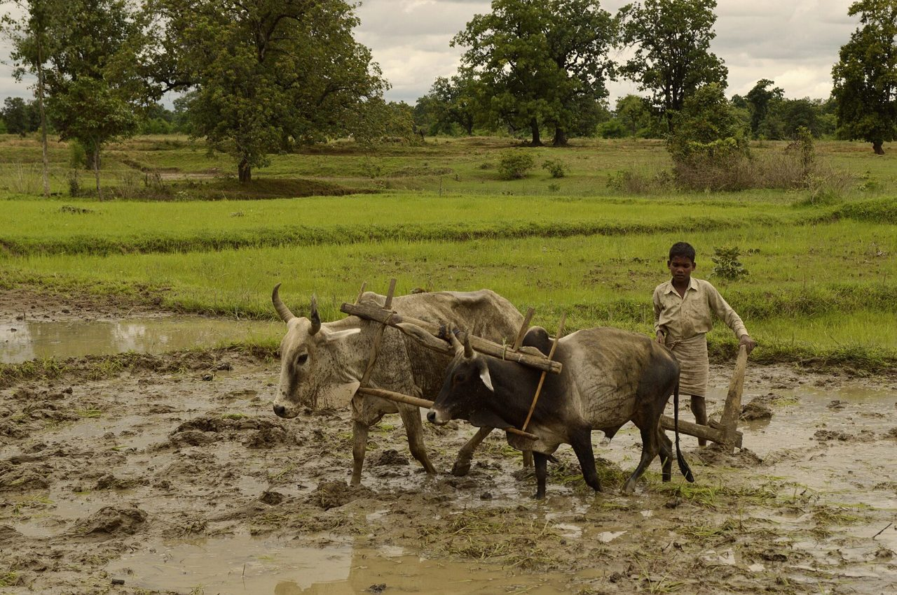
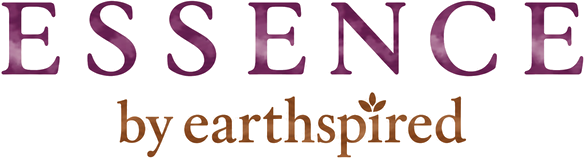
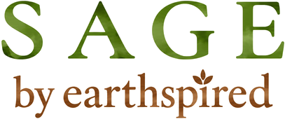
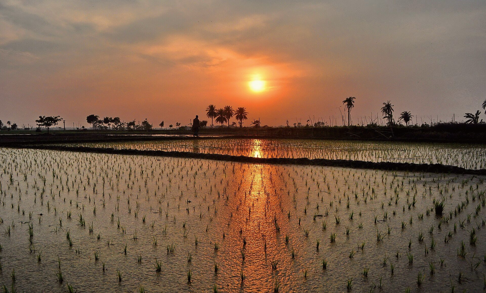

About Earthspired
Earthspired began with a belief that the best things in life stay close to their source.

Who we are
Earthspired was born from a simple observation: the things we reach for most — the food we snack on, the objects we live with, the rituals we keep — are often the furthest removed from where they began. We wanted to close that distance.
So we began with the source. A grain baked rather than fried. A botanical in its simplest form. A plate glazed in the colours of the earth. Everything we make is chosen for where it comes from, and made to belong in the everyday.



What Earthspired represents
We believe nature already holds most of what we need. Our role is to choose carefully, keep things honest and make them easy to live with.
Rooted
We begin with real grains, time-honoured botanicals and natural materials — and let them lead.
Honest
Clear information, simple formulations and nothing added for the sake of it.
Everyday
Made to be used, enjoyed and returned to — not saved for special occasions.
Savour. Live. Nourish.
Whether it's a treat to savour, an object to live with or a ritual to return to, everything we make grows from the same root.
Food that rewards you — real grains, baked with care and made for savouring.
Visit INDULGE →
LifestyleConsidered pieces for the everyday rituals of the table, the workday and the home.
Visit ESSENCE →
WellnessTime-honoured botanicals in simple forms, for balance and mindful living.
Visit SAGE →
It's the thread that runs through everything we make — from the grain, the root and the soil to the small moments that make up your day.